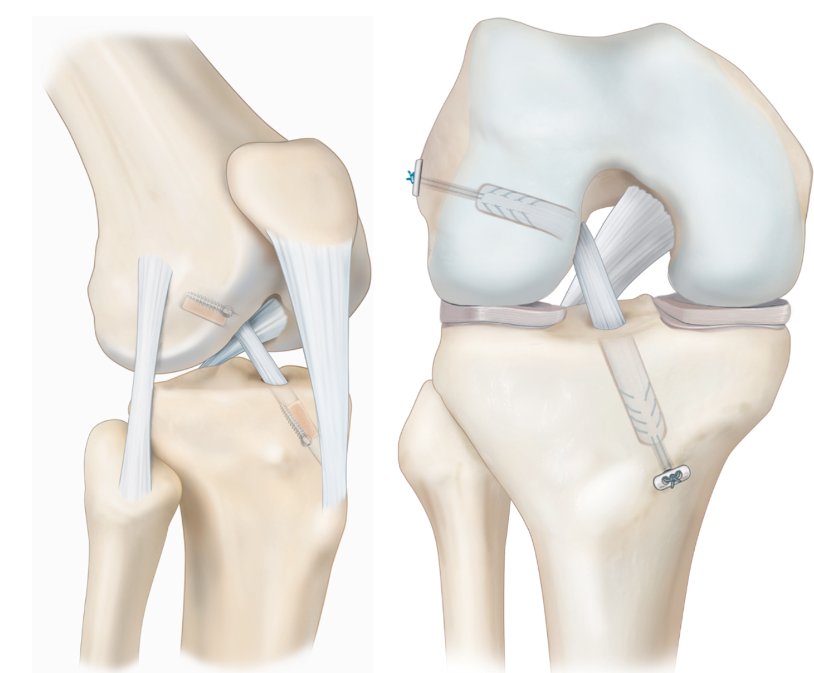
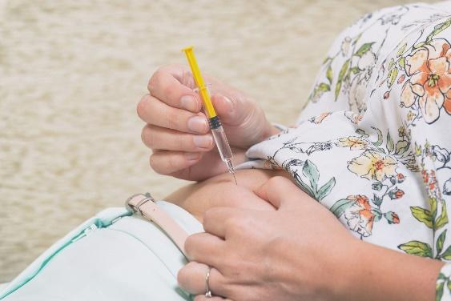

Introducción
El ligamento cruzado anterior (LCA) es uno de los cuatro ligamentos principales de la rodilla. Su función es proporcionar estabilidad rotacional y evitar que la tibia se desplace hacia delante respecto al fémur. Es esencial para actividades que implican cambios de dirección, giros y saltos.
¿Cómo se lesiona?
La rotura del LCA se produce habitualmente durante movimientos de pivotaje o torsión de la rodilla, frecuentes en deportes como fútbol, baloncesto o esquí. Puede ocurrir por contacto (una entrada o choque) o sin contacto (un giro brusco con el pie fijo en el suelo). En el momento de la lesión, muchos pacientes refieren un «chasquido» y una hinchazón inmediata de la rodilla.

Mecanismo típico de lesión del LCA: valgo, rotación tibial interna y flexión de rodilla
La cirugía
La reconstrucción del LCA es una intervención artroscópica que consiste en sustituir el ligamento roto por un injerto (tejido que actúa como nuevo ligamento). La cirugía dura aproximadamente 1 hora y se realiza habitualmente de forma ambulatoria o con una noche de ingreso.

Cirugía artroscópica de rodilla

Plastia del LCA con túneles óseos
Tipos de injerto
- Tendón rotuliano (hueso-tendón-hueso / HTH): Utiliza el tercio central del tendón rotuliano con bloques óseos en cada extremo. Ofrece una fijación muy sólida. Puede causar dolor anterior de rodilla en algunos casos.
- Isquiotibiales (semitendinoso ± grácilis): Menor dolor anterior de rodilla que el HTH. Incisión más pequeña. Es una de las opciones más utilizadas en la actualidad.
- Tendón cuadricipital: Tendencia creciente en los últimos años. Injerto resistente con menor dolor en la zona donante que el HTH.
- Aloinjerto (donante): No genera molestias en la zona donante. Se utiliza principalmente en cirugías de revisión o lesiones multiligamentarias. Su integración biológica es algo más lenta.

Tipos de injerto: tendón rotuliano (HTH), isquiotibiales, tendón cuadricipital y aloinjerto
- Caminar
- Nadar
- Bicicleta estática
- Senderismo suave
- Yoga
- Pilates
- Fútbol de competición (primeros 9 meses)
- Deportes de pivotaje sin rehabilitación completa
- Saltar sin control
- Esquiar antes de 6 meses
La elección del tipo de injerto depende de factores como tu edad, nivel de actividad deportiva, anatomía y preferencias. Tu cirujano te recomendará la opción más adecuada para tu caso.
Posibles complicaciones
Si bien la tasa de éxito de la reconstrucción del LCA es alta, como en cualquier intervención quirúrgica pueden presentarse complicaciones:
- Infección: Poco frecuente (inferior al 1%).
- Trombosis venosa profunda: Poco frecuente, se previene con medicación y movilización precoz.
- Rigidez articular: Se previene con una rehabilitación adecuada y precoz.
- Dolor en la zona donante del injerto: Habitualmente temporal, mejora con el tiempo.
- Re-rotura del injerto: Entre el 5 y el 10% en los primeros 2 años. La rehabilitación completa reduce este riesgo.
- Lesión del ligamento contralateral: Posible, especialmente si se vuelve al deporte sin una preparación adecuada.
Estancia hospitalaria

Ortesis articulada postoperatoria
Tratamiento al alta
Se te pautará analgésicos y antiinflamatorios, tratamiento anticoagulante (habitualmente heparina durante 15–30 días según restricción de carga) y crioterapia domiciliaria.
A las 2 semanas (retirada de puntos), al mes, a los 3 y 6 meses, y al año.
Administración de heparina
La heparina se aplica por vía subcutánea, preferentemente en el abdomen o la parte externa del muslo. Sigue estos pasos:

Administración subcutánea de heparina
- Lávate las manos antes y después de la inyección.
- Limpia la piel con una gasa con alcohol.
- Pellizca la piel e introduce la aguja en ángulo recto (90°).
- Inyecta lentamente y no masajees tras la aplicación.
- Alterna los lados cada día.
La duración del tratamiento es habitualmente de 15 a 30 días, dependiendo de la restricción de carga y las indicaciones de tu cirujano.
Si aparecen hematomas grandes, sangrado inusual o dolor persistente en la zona de punción, contacta con tu médico.
Recuperación mes a mes
- Control de inflamación y dolor
- Recuperar la extensión completa de la rodilla
- Flexión progresiva hasta 90°
- Marcha con muletas y ortesis
- Ejercicios isométricos de cuádriceps
- Carga parcial progresiva

Elevación de pierna recta
- Retirada de muletas y ortesis (según indicación)
- Flexión hasta 120°
- Bicicleta estática
- Fortalecimiento muscular progresivo
- Inicio de ejercicios de propiocepción

Bicicleta estática
- Carrera suave en línea recta (a partir del 4.º mes si hay buena fuerza)
- Fortalecimiento avanzado
- Ejercicios funcionales
- Natación libre
- Retorno progresivo al deporte (tras superar test funcionales)
- El injerto alcanza su maduración biológica
- Trabajo de agilidad y cambios de dirección
- Deportes de competición habitualmente a partir del 9.º–12.º mes
Expectativas vs. Realidad
| Lo que muchos esperan | La realidad clínica |
|---|---|
| «Volveré al deporte en 3 meses.» | La reconstrucción de LCA requiere entre 6 y 12 meses de rehabilitación. El retorno prematuro al deporte es el principal factor de riesgo de re-rotura. |
| «El injerto es más débil que el ligamento original.» | Un injerto bien integrado tiene una resistencia similar al LCA nativo. La clave es respetar los tiempos de maduración biológica. |
| «Si me opero, ya no se me volverá a romper.» | La tasa de re-rotura es del 5–10% en los primeros 2 años. La rehabilitación completa y los programas de prevención reducen este riesgo. |
| «La rodilla quedará igual que antes.» | La mayoría de pacientes recuperan una función excelente, pero pueden persistir pequeñas diferencias en la sensación articular (propiocepción). |
| «Solo necesito operar y la rodilla se cura sola.» | La cirugía es solo el primer paso. Sin rehabilitación adecuada, el resultado será inferior independientemente de la técnica quirúrgica. |
| «No podré volver a hacer deporte.» | Más del 80% de los pacientes vuelven a practicar deporte. Con buena rehabilitación, muchos retornan a su nivel previo. |
| «La rehabilitación es solo ir al fisioterapeuta.» | Gran parte del trabajo se hace en casa. La constancia con los ejercicios domiciliarios es tan importante como las sesiones de fisioterapia. |
10 cosas que debes saber
- La reconstrucción del LCA es una de las cirugías más frecuentes en traumatología deportiva, con excelentes resultados a largo plazo.
- El injerto necesita tiempo para integrarse en tu rodilla. Respetar los plazos es fundamental para evitar complicaciones.
- La extensión completa de la rodilla (poder estirarla del todo) es el primer objetivo de la rehabilitación. No la descuides.
- La fuerza del cuádriceps es el factor más importante para un buen resultado funcional. Trabájalo desde el primer día.
- El hielo es tu mejor aliado durante las primeras semanas. Aplícalo 15–20 minutos cada 2–3 horas.
- No compares tu evolución con la de otros pacientes. Cada rodilla tiene su ritmo.
- La vuelta al deporte debe ser progresiva y guiada por criterios funcionales, no solo por el tiempo transcurrido.
- Los programas de prevención de lesiones (FIFA 11+, ejercicios neuromusculares) reducen el riesgo de nueva lesión hasta un 50%.
- Es normal sentir inseguridad al volver al deporte. La confianza se reconstruye de forma gradual, igual que el ligamento.
- Tu cirujano y tu fisioterapeuta son un equipo. Mantén una comunicación abierta con ambos durante todo el proceso.
Signos de alarma
Durante tu recuperación, contacta con tu cirujano o acude a urgencias si aparecen:
- Fiebre superior a 38 °C que persiste más de 24 horas.
- Enrojecimiento, calor o secreción en las heridas quirúrgicas.
- Hinchazón brusca y dolor intenso en el gemelo (posible trombosis).
- Dolor torácico, dificultad para respirar o palpitaciones.
- Bloqueo articular (no poder mover la rodilla).
- Pérdida de sensibilidad o cambio de color en el pie.
Preguntas frecuentes
¿Cuándo puedo conducir?
¿Cuántas sesiones de fisioterapia necesitaré?
¿Puedo nadar?
¿Volveré a jugar al fútbol / hacer deporte?
¿Qué pasa si no me opero?
Recuerda
La reconstrucción del LCA es un proceso que requiere tiempo, constancia y paciencia. Confía en el proceso, sigue las indicaciones de tu cirujano y fisioterapeuta, y no precipites la vuelta al deporte. Tu rodilla te lo agradecerá.